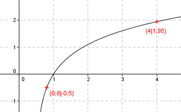

Aufgabe 105 Ergänzen Sie die Wertetabelle für den Graphen: y = ln(2x - 1) x 0,8 4 y -0,5 1,95 y = f(0,8) = ln (2*0,8 - 1) = ln 0,6 = -0,5 gerundet f(x) = 1,95 eingesetzt: 1,95 = ln(2x - 1) e1,95 = 2x - 1 |+1 e1,95 + 1 = 2x 8 = 2x |:2 x = 4 